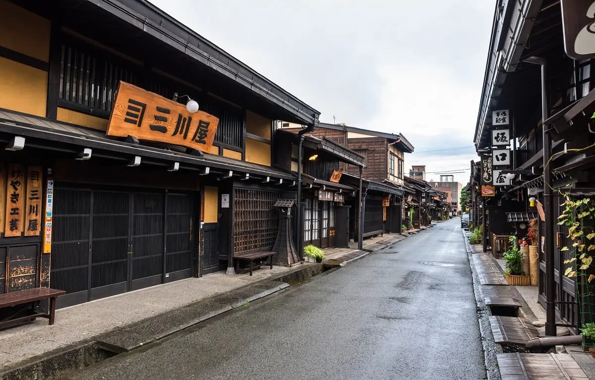
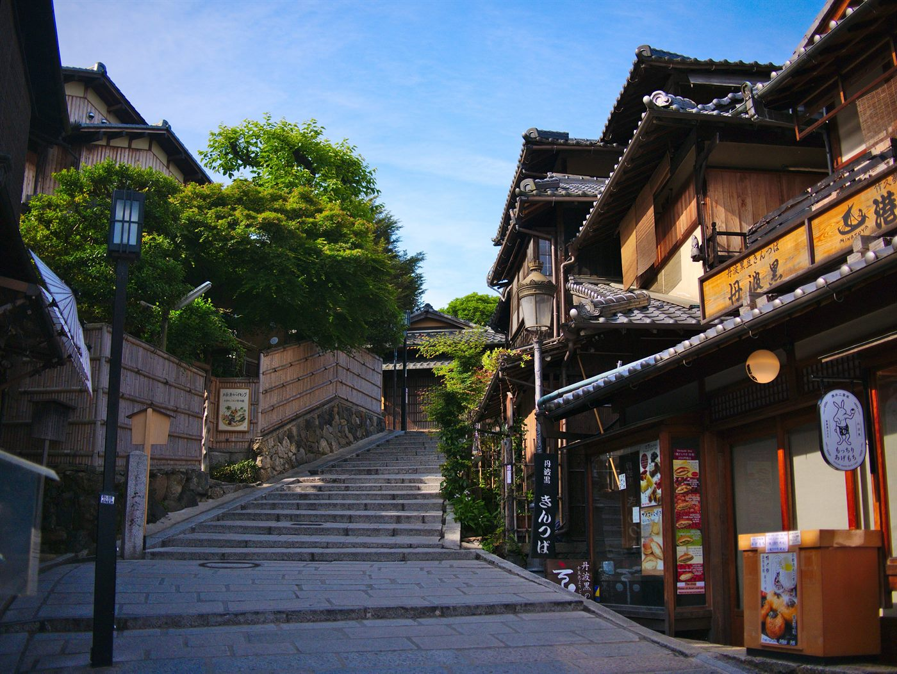
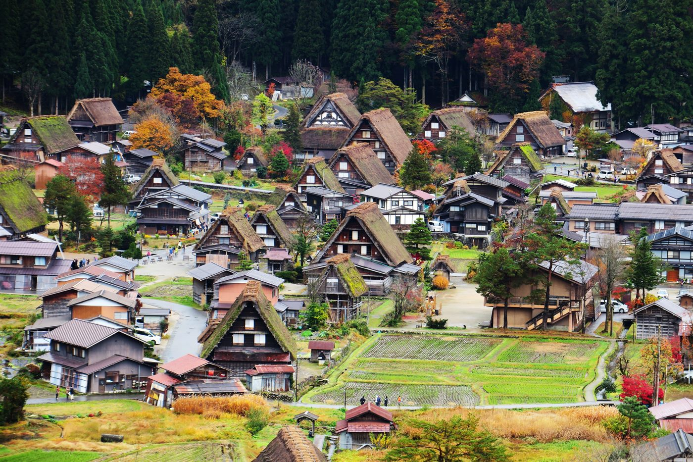
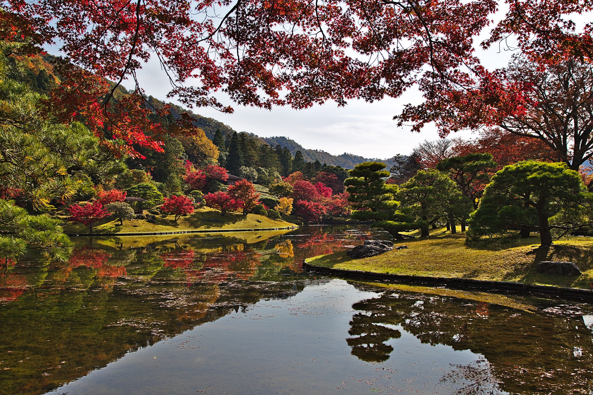
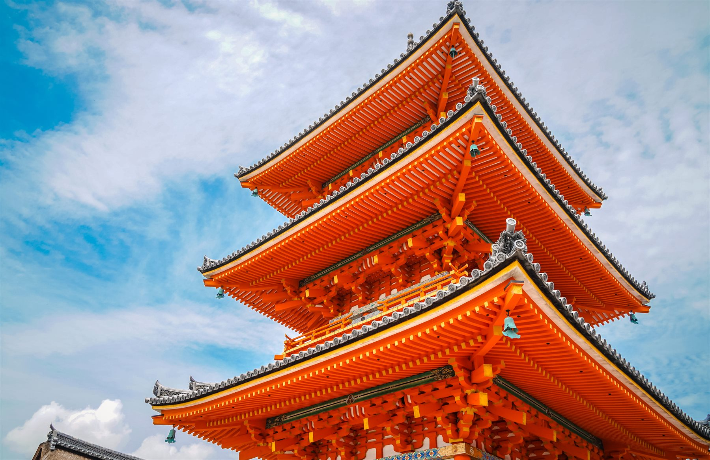
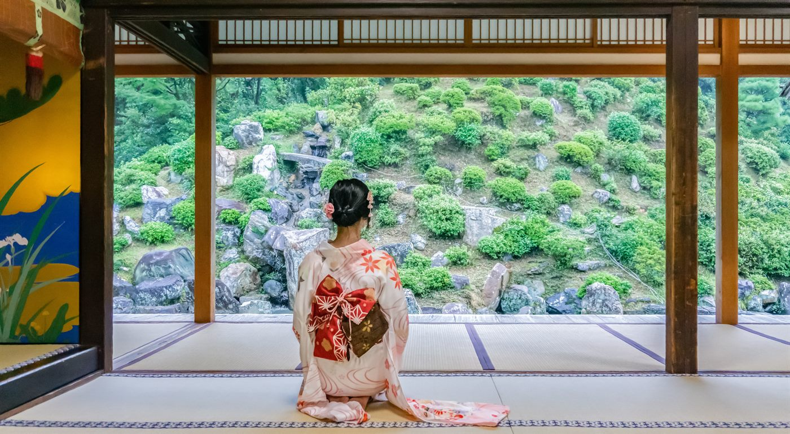
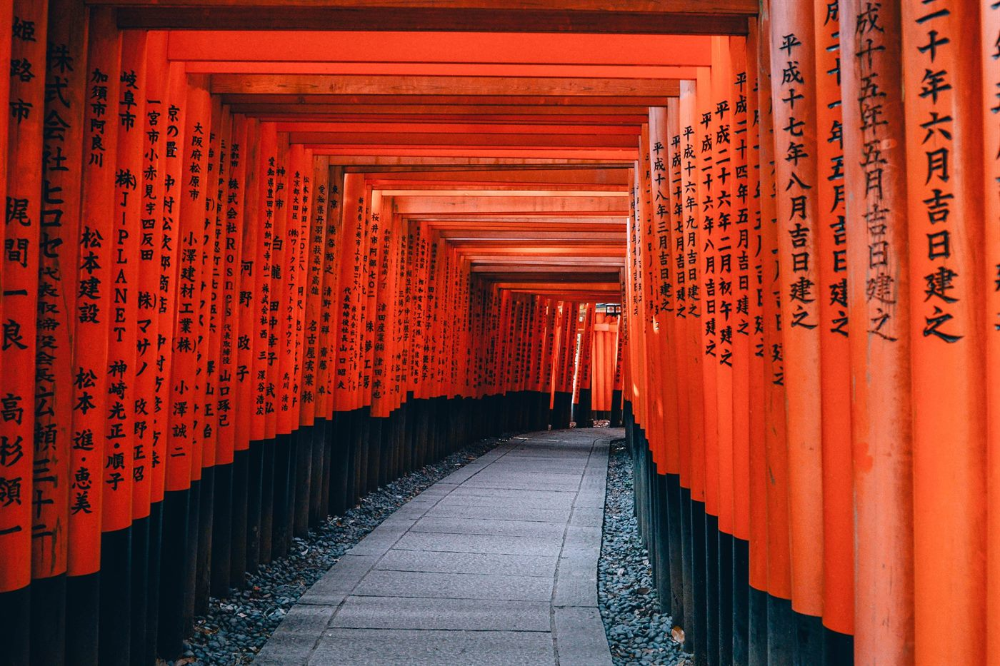
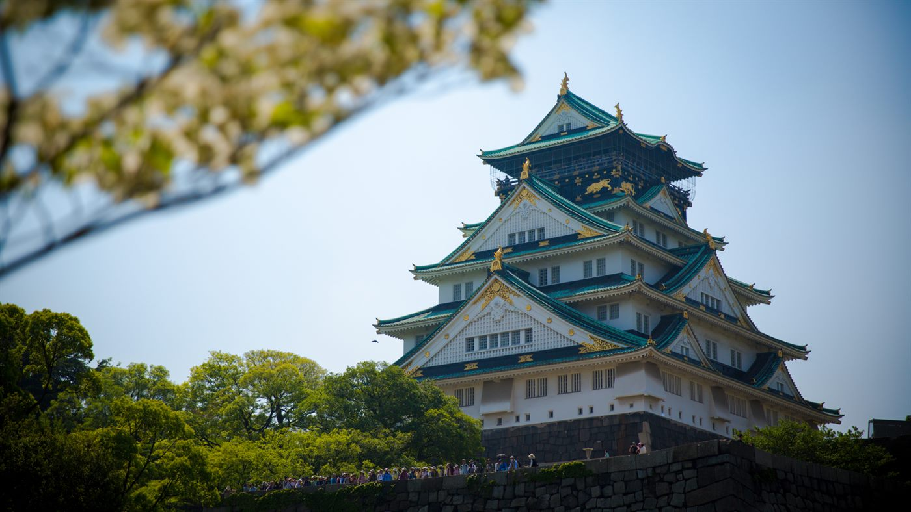
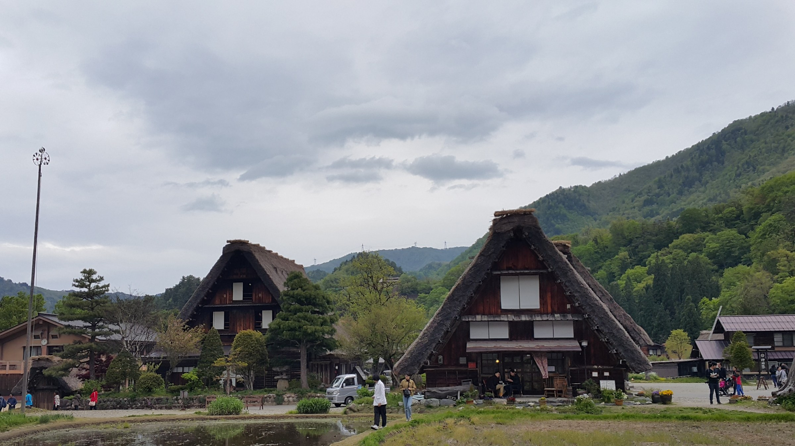
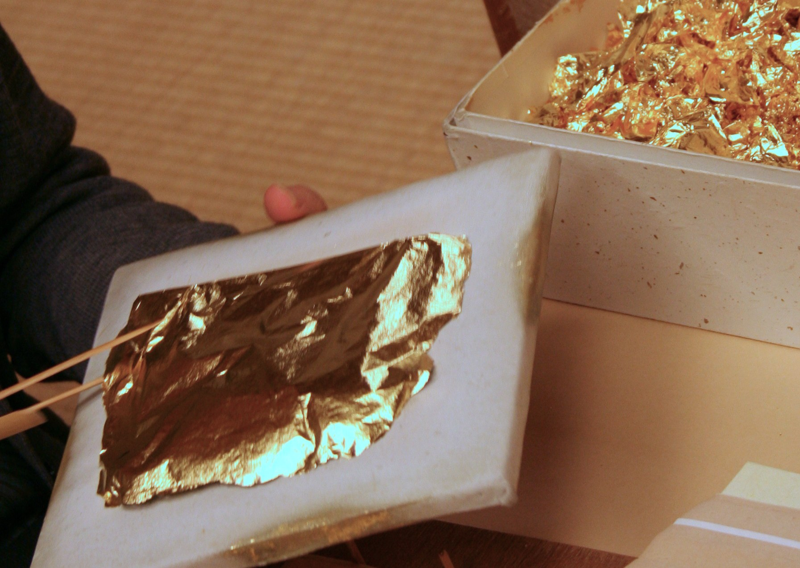

Hida Takayama
Historic merchant streets, morning markets, sake breweries, and traditional townhouses reveal a more local side of Japan.

Culture · Craft · Old towns
A refined 9-day trip for travelers who want traditional craft, quieter regional towns, Shirakawa-go, Kanazawa’s design sensibility, and Kyoto as the cultural finale.
9 days · Year-round, best in spring/fall · Culture, craft, and old towns
Overview
This trip is designed for travelers who want more than the standard city highlights. It begins in Tokyo, then moves into Hida Takayama, Shirakawa-go, and Kanazawa before finishing in Kyoto—creating a calmer, more textured view of Japan through craft, townscapes, gardens, food, and local identity.
This itinerary works especially well for culture-focused families, repeat Japan travelers, and small groups interested in Japanese aesthetics, handwork, architecture, and everyday regional life.
Highlights
Historic merchant streets, morning markets, sake breweries, and traditional townhouses reveal a more local side of Japan.
This World Heritage village gives the trip a powerful visual and cultural anchor, especially for storytelling and photography.
Gold leaf, Kutani ware, samurai districts, teahouse streets, seafood, and Kenrokuen Garden create a refined cultural arc.
Tea, incense, kimono, washi, ceramics, or sake experiences can be tailored by age, interest, and group type.
The 9-day length allows for depth without making the trip feel slow or overly academic.
The itinerary can be adapted into a craft, architecture, traditional culture, or family learning program with minimal changes.
Day by day
Private airport transfer, hotel check-in, and a welcome dinner or relaxed evening to settle into Japan.

Explore Asakusa, Ueno, or Nihonbashi, with the option to add an Edo craft, washi, tea, incense, or traditional sweets workshop.

Travel to Takayama and visit Sanmachi’s old streets, Takayama Jinya, or Miyagawa Morning Market, followed by an evening sake brewery visit.

Visit the gassho-style village of Shirakawa-go, then continue to Kanazawa for local cuisine or an evening walk through Higashi Chaya.

Visit Kenrokuen, Kanazawa Castle Park, samurai districts, and teahouse streets, plus a gold-leaf, Kutani ware, or Kaga Yuzen experience.

Transfer to Kyoto and visit Kiyomizu-dera, Ninenzaka, Sannenzaka, Gion, and Hanamikoji to shift into the old-capital atmosphere.

Start with kimono, tea, incense, washi, or ceramics, then visit Kinkaku-ji, Ryoan-ji, or Ginkaku-ji based on group interest.

Choose Arashiyama, Tenryu-ji, Fushimi Inari, or a Nara day trip, then finish with a closing dinner and reflection on the craft experiences.

Transfer to Kansai International Airport, or add an Osaka departure extension.

Trip moments



Ideal for repeat Japan travelers, culture-focused families, and small groups seeking a deeper travel rhythm.
Request Info